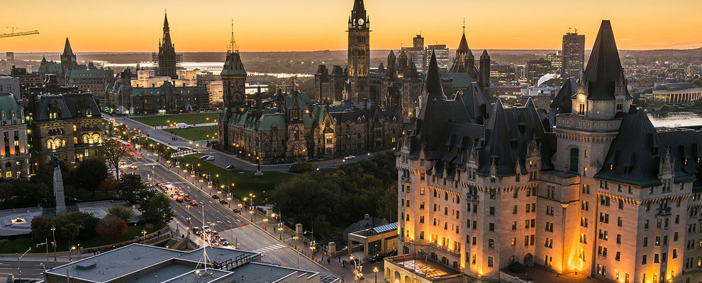
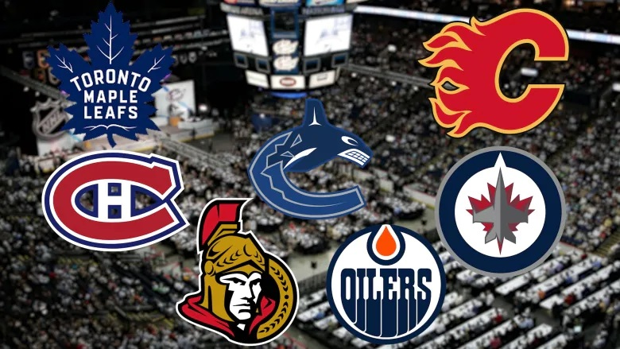

Ten Fun Facts About Canada
Here is some quick information about Canada. You will be tested on this after you are done reading.
- The country of Canada was formed in 1867 when three British colonies - The Province of Canada, Nova Scotia, and New Brunswick - joined to become one country.
- Since then, Canada has expanded greatly and is now the second-largest country in the world, with ten provinces and three territories.
- Canada's national anthem is O Canada, composed by Calixa Lavallée.
- The capital of Canada is Ottawa and its biggest city is Toronto. 
- Despite being the second-largest country in the world, Canada has a population of only 37 million. This gives Canada a population density of 4 people per km².
- Canada has two official sports: hockey in the winter and lacrosee in the summer. There are seven Canadian teams in the NHL. 
- Canada has the longest coastline in the world at roughly 202,080km long.
- More than half of all the lakes in the world are located in Canada.
- Montreal, in the Canadian primarily French-speaking province of Quebec, is the second-largest French-speaking city in the world.
- The Bay of Fundy, in eastern Canada, is home to the highest waves in the world, at over 13m high.

Present-day map of Canada
O Canada performed by Edward Johnson
A photo of the government buildings in Ottawa, including the Parliament.

A photo of downtown Toronto
The seven Canadian NHL Teams

A photo of downtown Montreal
A short clip of the waves in the Bay of Fundy